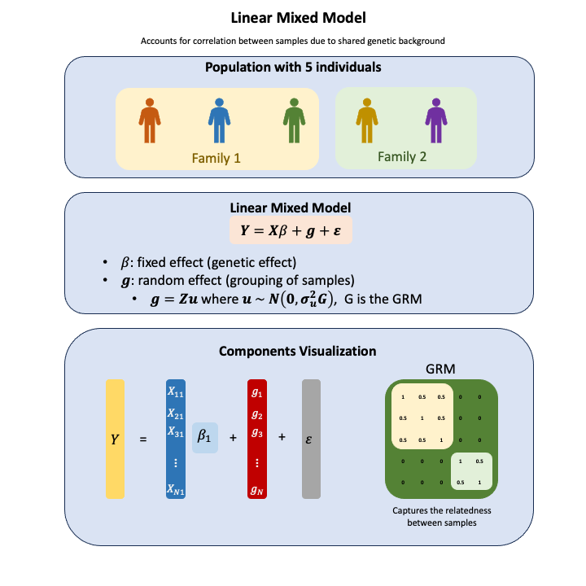

Linear Mixed Model#
The random effect model in statistical genetics allows us to account for correlation between individuals due to shared genetic background (like family relationships) by partitioning variance into fixed effects (specific genetic variants we’re testing) and random effects (overall genetic similarity within groups).
Graphical Summary#

Key Formula#
In the linear mixed model (mixed because it incorporate both the fixed and the random effects), which accurately represent non-independent data structures,
where:
\(\mathbf{Y}\) is the \(N \times 1\) vector of phenotypes
\(\mathbf{X}\) is the \(N \times M\) design matrix for fixed effects (e.g., genotypes, covariates)
\(\boldsymbol{\beta}\) is the \(M \times 1\) vector of fixed effect coefficients (unknown, to be estimated)
\(\mathbf{Z}\) is the \(N \times M\) design matrix for random effects
\(\mathbf{u}\) is the \(M \times 1\) vector of random effects, where \(\mathbf{u} \sim N(0, \sigma^2_u\mathbf{G})\) (unknown)
\(\mathbf{G}\) is the relationship matrix between the \(N\) individuals
\(\boldsymbol{\epsilon}\) is the \(N \times 1\) vector of residual errors, where \(\boldsymbol{\epsilon} \sim N(0, \sigma^2_e\mathbf{I})\)
Technical Details#
Key Challenges in Statistical Genetics#
The application of LMMs in statistical genetics faces several major computational and methodological challenges that have driven the development of numerous specialized methods:
Computational Complexity#
Matrix inversion of \(\mathbf{V}^{-1}\) requires \(O(N^3)\) operations for \(N\) individuals
Modern genomic datasets often have \(N > 100,000\), making direct inversion computationally prohibitive
Genetic relationship matrices are typically dense, exacerbating computational burden
High-Dimensional Genomic Data#
Genome-wide association studies (GWAS) test millions of variants
Each variant requires separate LMM fitting, multiplying computational demands
Standard software like
lmerbecomes impractical for genomic-scale analyses
Complex Population Structure#
Population stratification creates intricate correlation patterns
Cryptic relatedness between seemingly unrelated individuals
Multiple ancestral populations with different allele frequencies
Why Many Specialized Methods Exist#
These challenges have necessitated the development of multiple specialized LMM implementations in statistical genetics, each optimizing different aspects:
Computational Efficiency Methods#
BOLT-LMM (Bayesian On-Line Learning Tool): Employs Monte Carlo methods and randomized algorithms for large-scale GWAS
SAIGE (Scalable and Accurate Implementation of GEneralized mixed model): Uses sparse matrix techniques and saddlepoint approximation
fastGWA: Implements sparse genetic relationship matrices and efficient algorithms for biobank-scale data
Memory-Efficient Approaches#
GCTA (Genome-wide Complex Trait Analysis): Uses restricted maximum likelihood (REML) with memory-efficient algorithms
LDAK (LD Adjusted Kinship): Adjusts for linkage disequilibrium patterns to improve kinship matrix estimation
REGENIE: Two-step approach that first fits whole-genome model, then tests individual variants
Statistical Power Optimization#
Mixed Linear Model implementations in PLINK 2.0: Optimized for standard GWAS workflows
EIGENSOFT/EIGENSTRAT: Principal component-based population structure correction
This diversity of approaches reflects the fundamental tension between computational feasibility and statistical rigor in modern genomic analyses, where the scale of data has far exceeded traditional statistical computing paradigms. Each method represents different trade-offs between speed, memory usage, statistical accuracy, and applicability to specific study designs.
Example#
In this genetic analysis example, we examine the relationship between genetic variants and height using random effect models.
The key steps include:
preparing genotype and phenotype data for 5 individuals with 3 genetic variants and height measurements, and standarize them
organizing individuals into family groups (individuals 1-3 in family 1, individuals 4-5 in family 2)
fitting random effect models for each variant using the
lmerfunction, which allows us to separate variant-specific effects from family-related genetic background.
The key information captured includes the effect size of each variant on height, the proportion of height variance explained by family relatedness versus the specific variant, and how accounting for family structure affects our understanding of genetic associations. Unlike fixed effect models that might attribute too much importance to specific variants, this approach helps control for the shared genetic background within families.
# Clear the environment
rm(list = ls())
# Load required packages
library(lme4) # For mixed-effect models
# Define genotypes for 5 individuals at 3 variants
# These represent actual alleles at each position
# For example, Individual 1 has genotypes: CC, CT, AT
genotypes <- c(
"CC", "CT", "AT", # Individual 1
"TT", "TT", "AA", # Individual 2
"CT", "CT", "AA", # Individual 3
"CC", "TT", "AA", # Individual 4
"CC", "CC", "TT" # Individual 5
)
# Reshape into a matrix
N = 5 # number of individuals
M = 3 # number of variants
geno_matrix <- matrix(genotypes, nrow=N, ncol=M, byrow=TRUE)
rownames(geno_matrix) <- paste("Individual", 1:N)
colnames(geno_matrix) <- paste("Variant", 1:M)
alt_alleles <- c("T", "C", "T")
# Convert to raw genotype matrix using the additive / dominant / recessive model
Xraw_additive <- matrix(0, nrow=N, ncol=M) # dount number of non-reference alleles
rownames(Xraw_additive) <- rownames(geno_matrix)
colnames(Xraw_additive) <- colnames(geno_matrix)
for (i in 1:N) {
for (j in 1:M) {
alleles <- strsplit(geno_matrix[i,j], "")[[1]]
Xraw_additive[i,j] <- sum(alleles == alt_alleles[j])
}
}
X <- scale(Xraw_additive, center=TRUE, scale=TRUE)
# assign observed height for the 5 individuals
Y_raw <- c(180, 160, 158, 155, 193)
Y <- scale(Y_raw)
Loading required package: Matrix
# Add family information (individuals 1,2,3 are from family 1, and 4,5 from family 2)
family_info <- c(1, 1, 1, 2, 2)
# Create a data frame for analysis with scaled genotypes
genetic_data <- data.frame(
height = Y,
family = family_info,
individual = 1:N,
X # This directly adds all columns of X to the dataframe
)
# Rename the genotype columns for clarity
colnames(genetic_data)[4:(3+M)] <- paste0("variant", 1:M)
genetic_data
| height | family | individual | variant1 | variant2 | variant3 | |
|---|---|---|---|---|---|---|
| <dbl> | <dbl> | <int> | <dbl> | <dbl> | <dbl> | |
| Individual 1 | 0.6528093 | 1 | 1 | -0.6708204 | 0.2390457 | 0.4472136 |
| Individual 2 | -0.5560968 | 1 | 2 | 1.5652476 | -0.9561829 | -0.6708204 |
| Individual 3 | -0.6769875 | 1 | 3 | 0.4472136 | 0.2390457 | -0.6708204 |
| Individual 4 | -0.8583234 | 2 | 4 | -0.6708204 | -0.9561829 | -0.6708204 |
| Individual 5 | 1.4385984 | 2 | 5 | -0.6708204 | 1.4342743 | 1.5652476 |
# Single variant analysis and PVE results
pve_results_single_variants <- data.frame(
Variant = character(),
PVE_Fixed = numeric(),
PVE_Family = numeric(),
PVE_Residual = numeric(),
Fixed_Variance = numeric(),
Family_Variance = numeric(),
Residual_Variance = numeric(),
Total_Variance = numeric(),
stringsAsFactors = FALSE
)
# Calculate PVE for each variant individually
for (j in 1:M) {
variant_col <- paste0("variant", j)
formula <- as.formula(paste("height ~", variant_col, "+ (1|family)"))
# Fit random effect model
model <- lmer(formula, data = genetic_data)
# Extract variance components
vc <- VarCorr(model)
family_variance <- as.numeric(vc$family)
residual_variance <- attr(vc, "sc")^2
# Calculate fixed effect variance
beta <- fixef(model)[variant_col]
X_var <- matrix(genetic_data[[variant_col]])
fixed_variance <- var(as.vector(X_var * beta))
# Calculate total variance
total_variance <- fixed_variance + family_variance + residual_variance
# Calculate PVE for each component
pve_fixed <- fixed_variance / total_variance
pve_family <- family_variance / total_variance
pve_residual <- residual_variance / total_variance
# Store results in the data frame
pve_results_single_variants <- rbind(pve_results_single_variants, data.frame(
Variant = variant_col,
PVE_Fixed = pve_fixed * 100,
PVE_Family = pve_family * 100,
PVE_Residual = pve_residual * 100,
Fixed_Variance = fixed_variance,
Family_Variance = family_variance,
Residual_Variance = residual_variance,
Total_Variance = total_variance,
stringsAsFactors = FALSE
))
}
pve_results_single_variants
boundary (singular) fit: see help('isSingular')
boundary (singular) fit: see help('isSingular')
| Variant | PVE_Fixed | PVE_Family | PVE_Residual | Fixed_Variance | Family_Variance | Residual_Variance | Total_Variance |
|---|---|---|---|---|---|---|---|
| <chr> | <dbl> | <dbl> | <dbl> | <dbl> | <dbl> | <dbl> | <dbl> |
| variant1 | 20.00779 | 0.000000 | 79.9922054 | 0.2500913 | 0.00000000 | 0.999878212 | 1.24997 |
| variant2 | 66.60926 | 0.000000 | 33.3907386 | 0.7267603 | 0.00000000 | 0.364319641 | 1.09108 |
| variant3 | 95.70867 | 3.655575 | 0.6357522 | 1.1000658 | 0.04201681 | 0.007307271 | 1.14939 |
# Calculate PVE for all variants together
# Fit the full model with all variants
full_formula <- as.formula("height ~ variant1 + variant2 + variant3 + (1|family)")
full_model <- lmer(full_formula, data = genetic_data)
# Extract variance components
vc_full <- VarCorr(full_model)
family_variance_full <- as.numeric(vc_full$family)
residual_variance_full <- attr(vc_full, "sc")^2
# Calculate fixed effect variance for the full model
betas <- fixef(full_model)[2:(M+1)] # Skip intercept
X_design <- as.matrix(genetic_data[, 4:(3+M)])
predicted_fixed <- X_design %*% betas
fixed_variance_full <- var(as.vector(predicted_fixed))
# Calculate total variance
total_variance_full <- fixed_variance_full + family_variance_full + residual_variance_full
# Calculate PVE for each component
pve_fixed_full <- fixed_variance_full / total_variance_full
pve_family_full <- family_variance_full / total_variance_full
pve_residual_full <- residual_variance_full / total_variance_full
# Print out the results for all variants together
cat("\n---------- PVE Analysis for All Variants Together ----------\n")
cat("Fixed effects (all variants) PVE:", round(pve_fixed_full * 100, 2), "%\n")
cat("Random effect (family) PVE:", round(pve_family_full * 100, 2), "%\n")
cat("Residual PVE:", round(pve_residual_full * 100, 2), "%\n")
cat("Total:", round((pve_fixed_full + pve_family_full + pve_residual_full) * 100, 2), "%\n\n")
cat("Variance components:\n")
cat("Fixed effects variance:", round(fixed_variance_full, 4), "\n")
cat("Family variance:", round(family_variance_full, 4), "\n")
cat("Residual variance:", round(residual_variance_full, 4), "\n")
cat("Total variance:", round(total_variance_full, 4), "\n")
# Calculate heritability (proportion of variance due to family structure)
heritability <- family_variance_full / (family_variance_full + residual_variance_full)
cat("\nHeritability (proportion of variance due to family structure):",
round(heritability * 100, 2), "%\n")
Warning message in checkConv(attr(opt, "derivs"), opt$par, ctrl = control$checkConv, :
"unable to evaluate scaled gradient"
Warning message in checkConv(attr(opt, "derivs"), opt$par, ctrl = control$checkConv, :
" Hessian is numerically singular: parameters are not uniquely determined"
---------- PVE Analysis for All Variants Together ----------
Fixed effects (all variants) PVE: 92.48 %
Random effect (family) PVE: 1.41 %
Residual PVE: 6.11 %
Total: 100 %
Variance components:
Fixed effects variance: 1.0142
Family variance: 0.0155
Residual variance: 0.067
Total variance: 1.0967
Heritability (proportion of variance due to family structure): 18.77 %
# Perform random effect model analysis for each variant separately
random_models <- list()
random_model_summaries <- list()
for (j in 1:M) {
variant_col <- paste0("variant", j)
formula <- as.formula(paste("height ~", variant_col, "+ (1|family)"))
# Fit random effect model
random_models[[j]] <- lmer(formula, data = genetic_data)
random_model_summaries[[j]] <- summary(random_models[[j]])
# Extract and print key information
fixed_effects <- fixef(random_models[[j]])
random_variance <- as.numeric(VarCorr(random_models[[j]])$family)
residual_variance <- attr(VarCorr(random_models[[j]]), "sc")^2
cat("\nEffect size (beta):", fixed_effects[2], "\n")
cat("Family variance component:", random_variance, "\n")
cat("Residual variance component:", residual_variance, "\n")
cat("Proportion of variance due to family:", random_variance / (random_variance + residual_variance), "\n")
}
boundary (singular) fit: see help('isSingular')
Effect size (beta): -0.5000913
Family variance component: 0
Residual variance component: 0.9998782
Proportion of variance due to family: 0
boundary (singular) fit: see help('isSingular')
Effect size (beta): 0.8525024
Family variance component: 0
Residual variance component: 0.3643196
Proportion of variance due to family: 0
Effect size (beta): 1.04884
Family variance component: 0.04201681
Residual variance component: 0.007307271
Proportion of variance due to family: 0.8518519
# Compare effects across variants
variant_effects <- sapply(random_models, function(model) fixef(model)[2])
names(variant_effects) <- paste0("Variant ", 1:M)
cat("\n---------- Effect Sizes Across Variants ----------\n")
print(variant_effects)
# Compare variance components across variants
variance_components <- lapply(random_models, function(model) {
vc <- VarCorr(model)
family_var <- as.numeric(vc$family)
residual_var <- attr(vc, "sc")^2
c(family_var = family_var,
residual_var = residual_var,
proportion_family = family_var / (family_var + residual_var))
})
variance_df <- do.call(rbind, variance_components)
rownames(variance_df) <- paste0("Variant ", 1:M)
cat("\n---------- Variance Components Across Variants ----------\n")
print(variance_df)
---------- Effect Sizes Across Variants ----------
Variant 1 Variant 2 Variant 3
-0.5000913 0.8525024 1.0488402
---------- Variance Components Across Variants ----------
family_var residual_var proportion_family
Variant 1 0.00000000 0.999878212 0.0000000
Variant 2 0.00000000 0.364319641 0.0000000
Variant 3 0.04201681 0.007307271 0.8518519